CDJ 2026
KONSEP ACARA
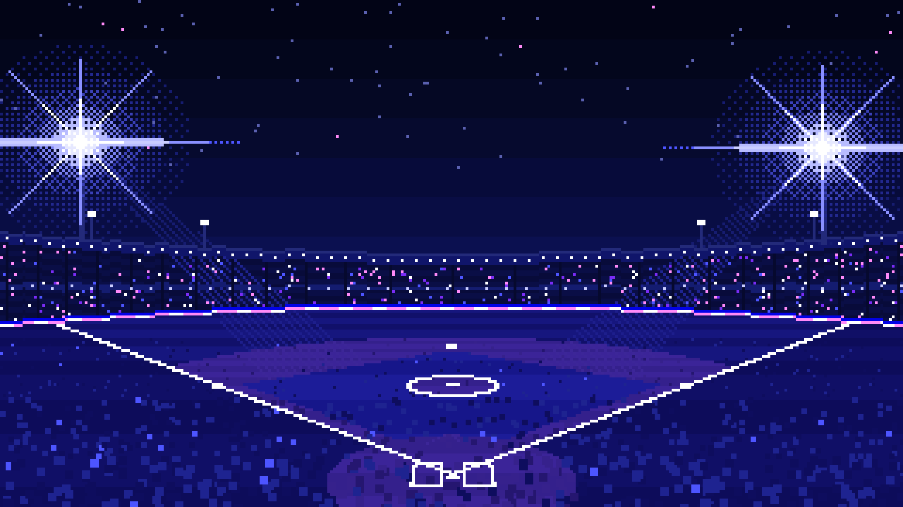
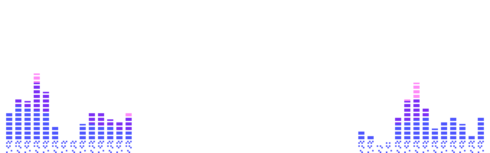
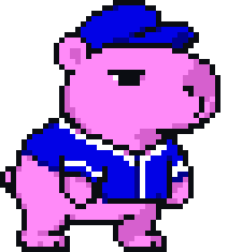
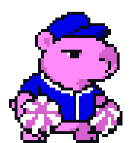
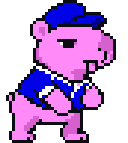
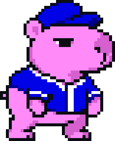
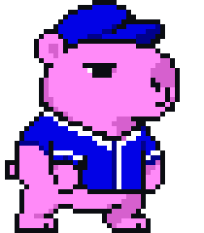
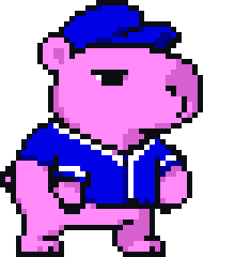
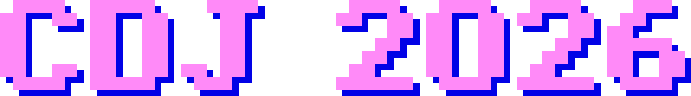
Konsep acara
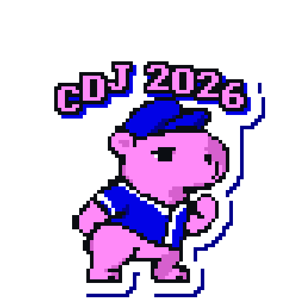
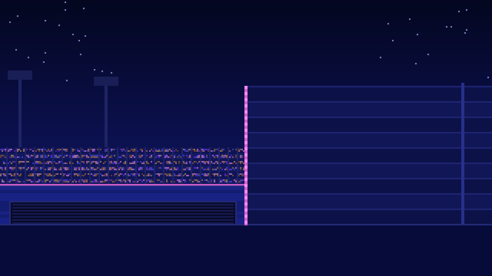
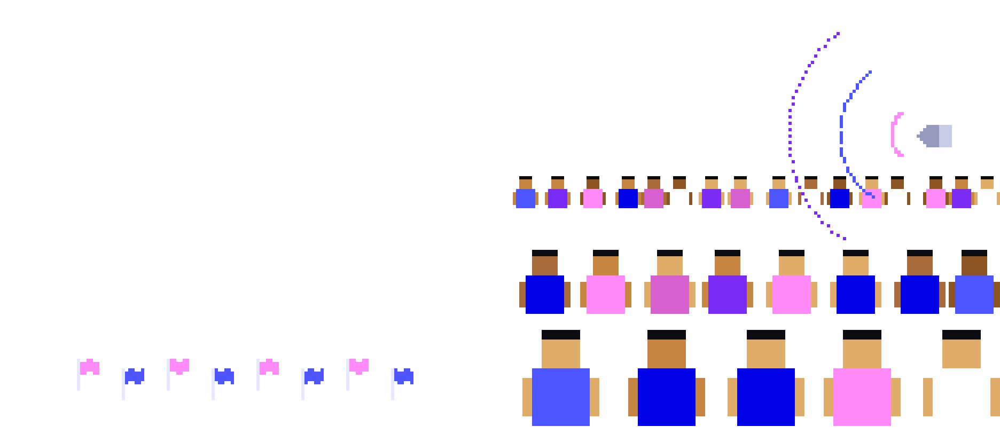
Konsep
Satu game, tiga level
Feel the game
Sebuah game tidak cukup dimainkan.
Ia harus terlihat, ia harus terdengar,
sampai semua orang ikut merasakannya.
Yang dilihat
Lampu menyala satu per satu, namamu berjalan di pita lampu, dan bendera membuka jalan.
Yang didengar
Namamu dipanggil, satu lagu menemani tiga hari, dan tribun menjawab dengan tepuk yang sama.
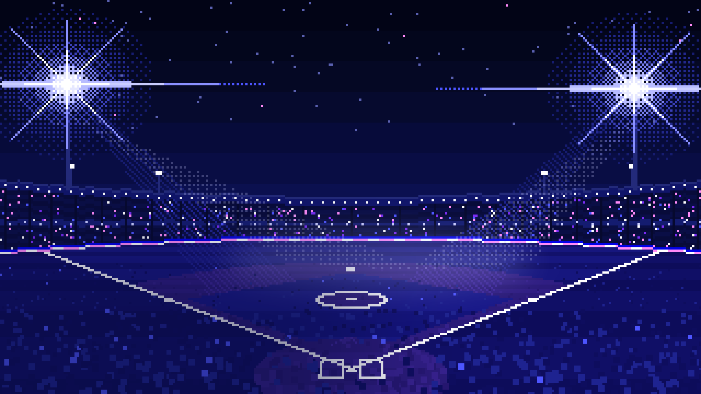
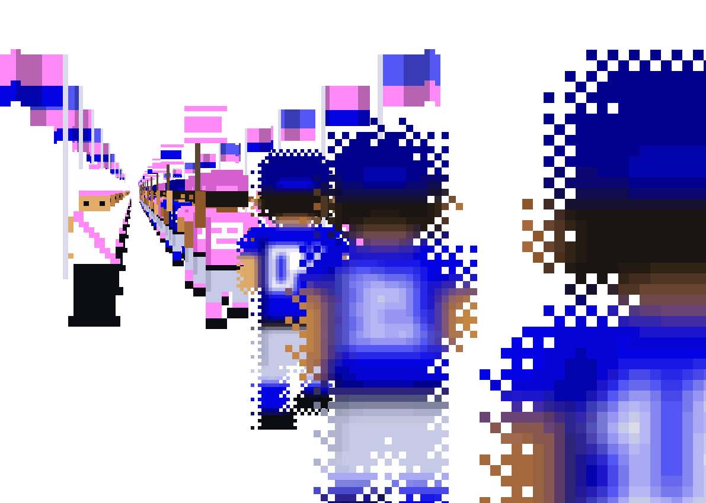
PLAYERS JOINED 07/20
Opening
Sabtu 5 Des, 19.00
Parade Pemain
LIHAT
Lorong bendera, tim berhenti di home plate
DENGAR
Mars per pool, stinger tiap tim, nama dari PA
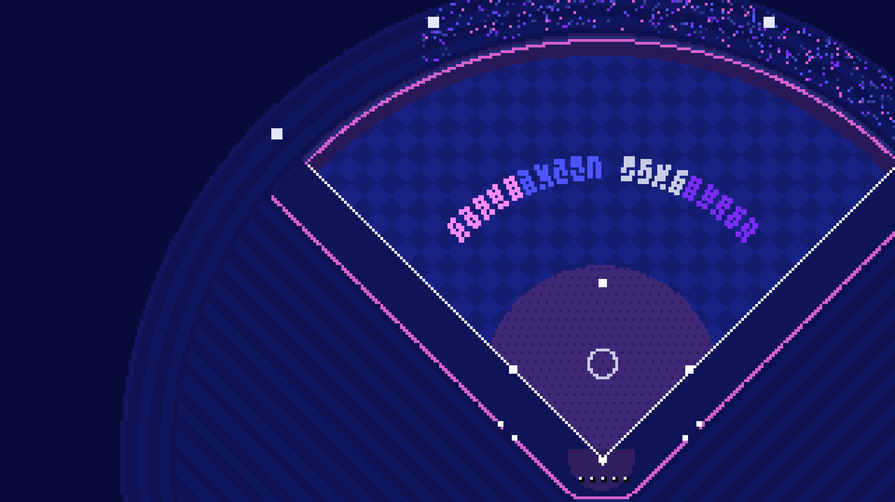
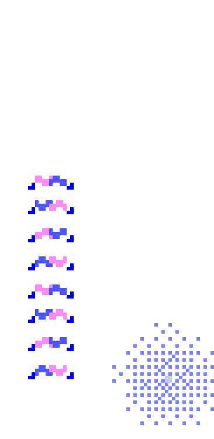
Opening
Formasi dari atas
Lorong bendera
LIHAT
Dua pintu, berhenti di home plate, barisan melengkung
DENGAR
Stinger saat berhenti, mars jalan terus sampai LEVEL UP
19.00
Insert coin, hitung mundur 10 bareng penonton
19.01
Color guard lari masuk, membentuk lorong
19.03
20 tim masuk per pool, pintu base 3 dan base 1 bergantian
19.16
Game Master masuk terakhir, berdiri di depan barisan
19.23
Rifle toss, lampu penuh, LEVEL UP
Lorong 24 x 5 m, 8 kiri 8 kanan
Pintu base 1: South, North
Pintu base 3: East, West
Game Master menunggu
Barisan melengkung 20 tim, 160 orang
East
West
North
South
10 m
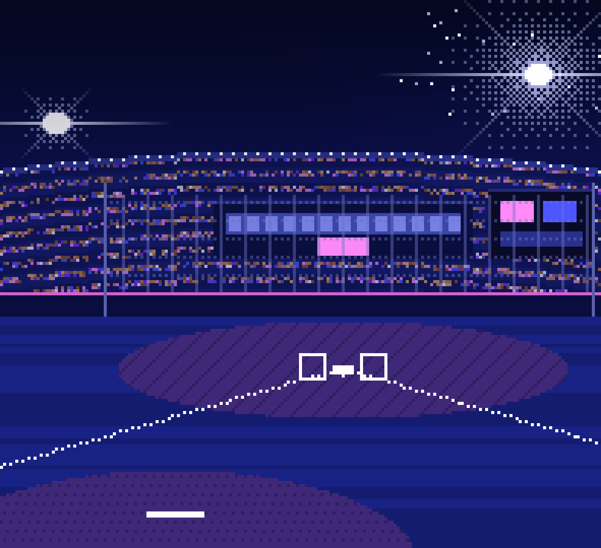
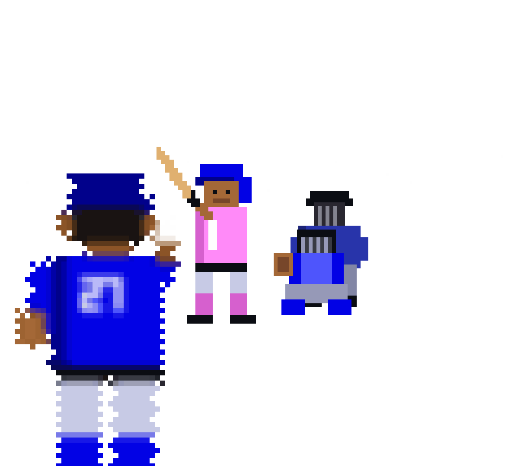
LIVE
CAT 2
RBD 1
INN 3
Setiap game
63 game, 2 lapangan
Feel the game
Tiap kejadian punya bunyi dan cahayanya sendiri.
Tim masuk
Dengar
Loop walk-out, PA sebut tim
Lihat
Nama tim berjalan di pita
Batter maju
Dengar
Walk-up song 5 detik
Lihat
NOW BATTING dan nomor
Bola hidup
Dengar
Hening, suara lapangan saja
Lihat
Skor di pita, tiang redup
HIT
Dengar
Bunyi koin, tribun bersorak
Lihat
HIT! di pita, tiang berombak
Home run
Dengar
1UP lalu stinger 10 detik
Lihat
Semua tiang menyala putih
Out, inning
Dengar
Bunyi out, lalu loop jeda
Lihat
OUT!, lalu DUG DUG CLAP
Sistem LED strip 12 tiang outfield, pita di pagar tribun, 1 operator
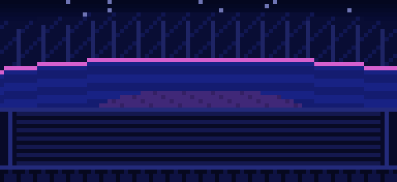
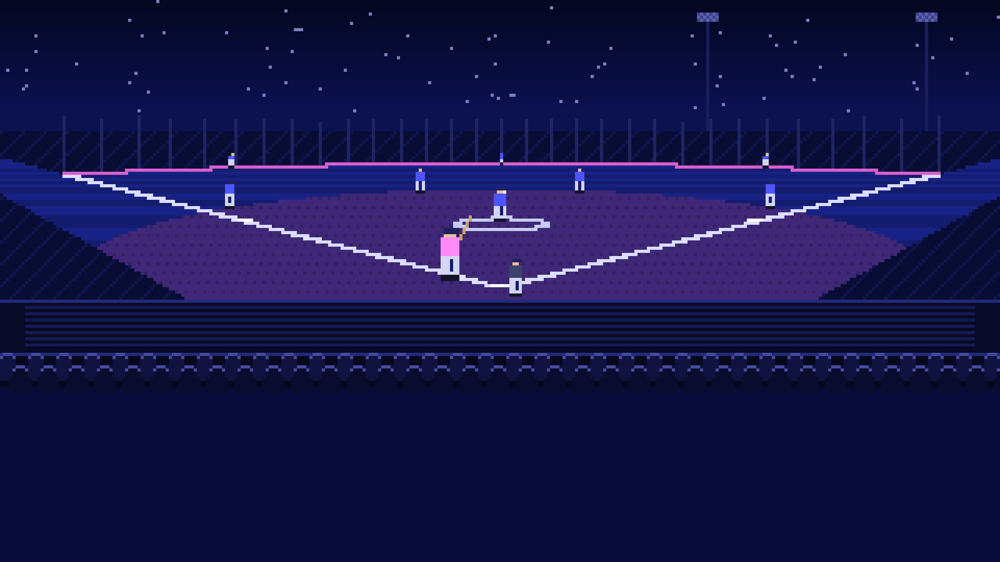
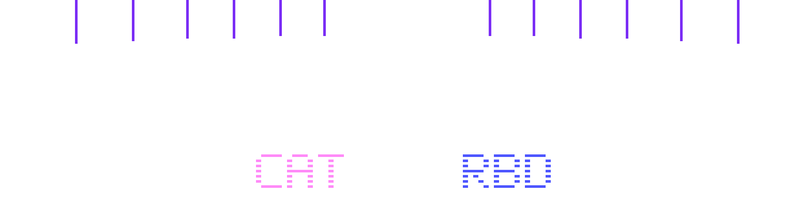
Produksi
Yang dilihat, dua lokasi
Lampu dua lokasi
Tengah gelap: mata batter
Pita LED strip di pagar tribun, menghadap penonton
Tiang outfield
12 tiang net, 6 kiri dan 6 kanan
Tiang tengah gelap demi mata batter
Saat bola hidup: diam, satu warna
Pagar tribun
7 garis LED strip, 15 m di belakang catcher
Menghadap penonton, boleh jalan terus
Skor, OUT, HIT!, nama, DUG DUG CLAP
Kendali
Laptop, panel tombol, 3 controller
1 operator di samping PA dan DJ
10 adegan siap tekan (slide berikut)
Tanpa layar LED: nama dan skor tampil di pita lampu.
Produksi
Satu tombol, satu adegan
Adegan lampu
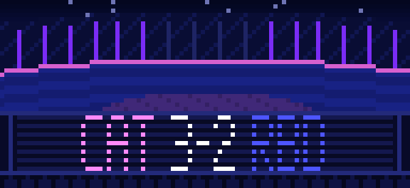
Bola hidup
Tiang diam satu warna, tengah gelap. Pita menampilkan skor.
Now batting
Walk-up batter. Nama dan nomor berjalan di pita, tiang menyala satu per satu.
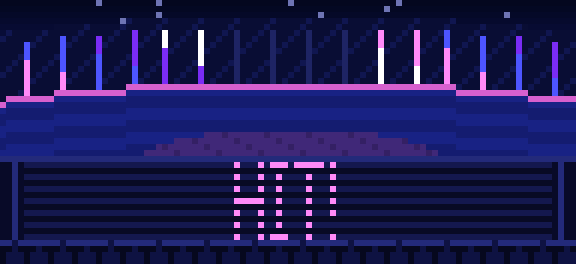
HIT!
Pukulan masuk. Pita berkedip HIT!, tiang berombak warna.
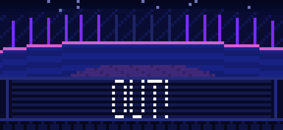
Out
Pita OUT! lalu jumlah out. Tiang tetap diam, bola bisa masih hidup.
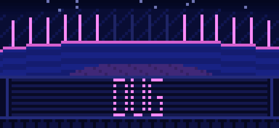
Ganti inning
Pita DUG DUG CLAP di 120 BPM, tiang berdenyut di tiap ketukan.
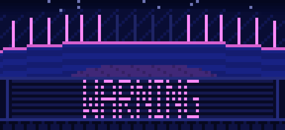
Warning
The Grand Final, Minggu 18.25. Pita dan tiang berkedip bersama alarm.
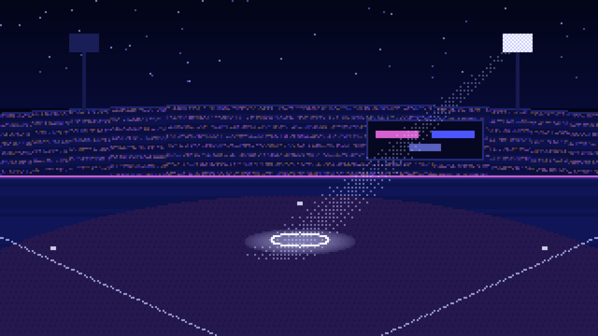
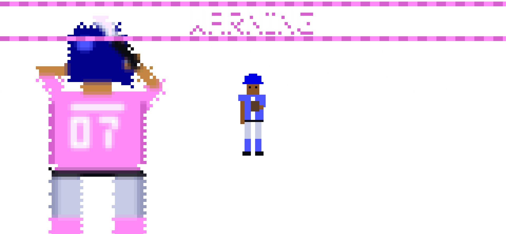
CAT
FINAL
RBD
Level terakhir
Minggu 6 Des, 18.30
The Grand Final
LIHAT
Lampu turun, WARNING di pita, walk-out
DENGAR
Alarm, lagu Grand Final, PA mode besar
The Grand Final
Minggu 6 Des
Tiga babak
Masuk arena
18.00 sampai 18.30
Lihat
Lampu turun ke 30%, WARNING di pita dan tiang, walk-out lewat lorong bendera
Dengar
Lagu Grand Final versi drone, alarm tiga kali, walk-up 5 detik per pemain
MC, PA
Mode besar: pelan dan berat. Line-up dipanggil nomor, lalu nama
Komentator
Paket 2 menit jalan kedua tim ke final, wawancara kapten
Pertarungan
18.30 sampai selesai
Lihat
Lampu penuh, FIGHT!, skor ala fighting game, FINAL ROUND di inning akhir
Dengar
Lagu Grand Final penuh, combo tiap run, round over di out ketiga
MC, PA
Singkat: nama dan skor
Komentator
Dua orang: pemandu laga dan analis, replay tiap run
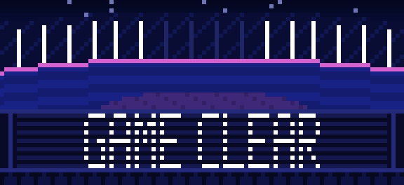
Juara lahir
Out terakhir
Lihat
Satu lampu sorot di pitch terakhir, lalu semua tiang menyala
Dengar
Semua bunyi mati, lalu GAME CLEAR dan chorus
MC, PA
“GAME CLEAR! Juara CDJ 2026”
Komentator
Ikut diam di pitch terakhir, lalu sebut juara
Aturan main tidak berubah; mode spesialnya di lampu, pita LED, dan suara. Cue sheet lengkap: acara/musik/cue-sheet-final.md.
Closing
Minggu 6 Des, 19.45
Semua tinggal
Tiga alasan peserta bertahan sampai lampu terakhir.
Undian koin, wajib hadir
Koin dari registrasi, tiap main, dan challenge. Nomor keluar 20.35; yang tidak di tribun diundi ulang.
Spirit Award tribun
Untuk tim yang paling ramai dan paling lengkap di tribun selama closing.
Foto terakhir 20 tim
Sesudah juara 1, semua tim lari ke tengah di bawah confetti. Diumumkan sejak opening.
Pengingat berjalan di pita tribun sejak The Grand Final: GRAND PRIZE 20.35, HARUS HADIR.
20 tim kembali ke barisan opening
Pemenang lewat lorong bendera
Podium, menghadap tribun
Tribun: supporter duduk per blok pool
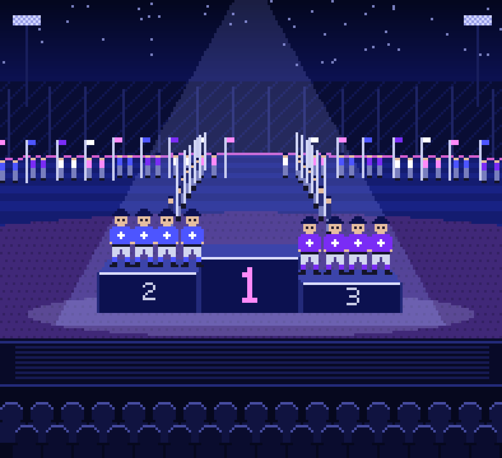
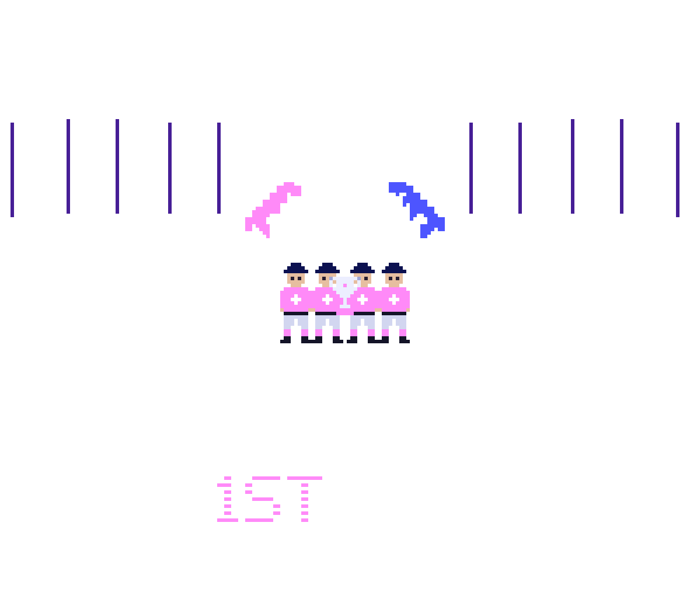
Closing
Minggu 6 Des, 20.00
High Score
Satu jam, tujuh adegan, semua tetap di tribun.
20.00
Enter name
Lihat
ENTER YOUR NAME di pita
Dengar
Jingle name entry
20.02
Recap
Lihat
Video 90 detik tiga hari
Dengar
Potongan lagu Instrumental
20.05
Naik level
Lihat
Challenger sampai juara 2 diketik
Dengar
Bleep per huruf, Awarding Slow
20.35
Undian koin
Lihat
Nomor koin di pita, wajib hadir
Dengar
Drumroll, bunyi koin
20.40
Lampu mati
Lihat
Gelap, tinggal satu lampu sorot
Dengar
Diam 3 detik
20.41
Juara 1
Lihat
1ST dan nama, trofi naik, confetti
Dengar
Beat drop lagu signature
20.50
Continue?
Lihat
CDJ 2027, hitung mundur 10 ke 0
Dengar
Bunyi koin seperti opening
Gambar dari kursi tribun. Tim dan nama hanya contoh.
INSERT COIN
Klik layar atau tekan Enter. Musik ikut berputar.
Panah kanan lanjut, panah kiri kembali, M musik, F layar penuh.
STAGE 01/11
Siap main
Putar HP ke samping supaya layar lebih besar.